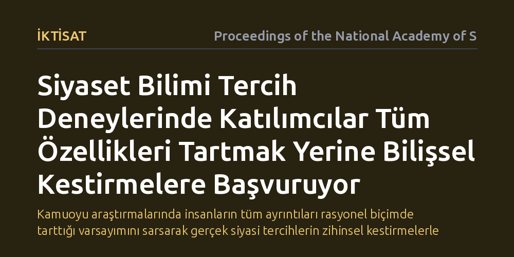

IKTISAT · Proceedings of the National Academy of Sciences · 2026-10-12
Araştırma, siyaset bilimindeki çok nitelikli tercih deneylerinde katılımcıların adayları nasıl değerlendirdiğini ve hangi karar kurallarını kullandığını inceledi. Sonuçlar, insanların tüm özellikleri bir arada tartmak yerine karar verirken belirgin özelliklere dayalı basit kestirme yolları benimsediğini gösterdi.
Kamuoyu araştırmalarında insanların tüm ayrıntıları rasyonel biçimde tarttığı varsayımını sarsarak gerçek siyasi tercihlerin zihinsel kestirmelerle şekillendiğini gösteriyor.

Siyaset bilimciler ve kamuoyu araştırmacıları, seçmenlerin hangi adayları veya politikaları neden tercih ettiğini anlamak için sıklıkla birlikte analiz (conjoint) deneylerine başvurur. Bu deneylerde katılımcılara yaşı, mesleği, parti aidiyeti, eğitim düzeyi ve vaatleri gibi pek çok farklı niteliği bir arada sunulan hayali aday profilleri gösterilir ve hangisini seçecekleri sorulur.
Geleneksel sosyal bilim yaklaşımları, bireylerin önlerine konan tüm bu nitelikleri tek tek tarttığını, olumlu ve olumsuz yönleri birbirleriyle dengeleyerek nihai bir fayda puanı çıkardığını varsayar. Oysa gerçek hayatta insanların bilişsel kapasiteleri sınırlıdır; karmaşık siyasi seçimlerle karşı karşıya kaldıklarında her bilgiyi eksiksiz biçimde işleyip tartmaları çoğu zaman mümkün olmaz. Bu durum, anketlerden elde edilen bulguların seçmenlerin zihnindeki gerçek karar mekanizmalarını ne kadar doğru yansıttığı sorusunu gündeme getirir.
Araştırmacılar bu soruyu yanıtlamak için, katılımcıların sadece hangi adayı seçtiğine bakmak yerine bu kararı verirken hangi zihinsel stratejiyi izlediklerini belirleyen yeni bir istatistiksel sınıflandırma yaklaşımı geliştirdi. Yöntem, bireylerin çok nitelikli öznel tercihler yaparken başvurdukları olası karar kurallarını matematiksel olarak ayrıştırmayı hedefler.
Çalışmada, siyaset bilimi alanında yürütülmüş çok nitelikli tercih deneylerinden elde edilen veriler bu yeni model çerçevesinde yeniden değerlendirildi. Böylece bireylerin tüm nitelikleri bir arada tartan telafi edici bir mantık mı yürüttüğü, yoksa tek bir baskın özelliğe bakıp diğerlerini göz ardı eden bilişsel kestirmelere mi başvurduğu olasılıksal olarak sınıflandırıldı.
Elde edilen bulgular, anket katılımcılarının standart modellerin varsaydığı gibi tüm özellikleri tek tek ağırlıklandırarak değerlendirmediğini ortaya koydu. Tersine, katılımcıların önemli bir bölümü karar verirken bilişsel kestirmelere yönelmekte ve adayları yalnızca bir ya da birkaç kritik özelliğe bakarak elemeyi tercih etmektedir.
Bu durum, insanların bilgi yükünü azaltmak amacıyla zihinsel kısayollar kullandığını ve bir adayın belirli bir olumsuz özelliğini diğer olumlu özellikleriyle telafi etmek yerine doğrudan o özelliği bir eleme kriteri yapabildiğini gösterir. Dolayısıyla, katılımcıların tercihlerinde ortalama etkiler hesaplandığında gözden kaçan bu strateji farklılıkları, bireysel düzeyde son derece belirleyici olmaktadır.
Bu çalışma, kamuoyu araştırmalarında ve siyasal analizlerde sıklıkla kullanılan modellerin yeniden gözden geçirilmesi gerektiğini gösterir. Standart analiz yöntemleri, insanların zihinsel kestirmeler kullandığı gerçeğini hesaba katmadığında, seçmenlerin önceliklerini ve politika tercihlerini olduğundan daha dengeli ya da farklı yorumlama riski taşır.
Sonuçlar, insanların rasyonel ve her parametreyi tartan birer hesap makinesi gibi çalışmadığını; tam tersine kısıtlı zaman ve dikkat koşullarında pratik kurallara dayanan uyarlanabilir karar vericiler olduğunu bir kez daha kanıtlamaktadır. Siyaset bilimi ve iktisatta kamu tercihlerini doğru okumak, bireylerin karara varırken hangi kestirmeleri kullandığını anlamaktan geçer.